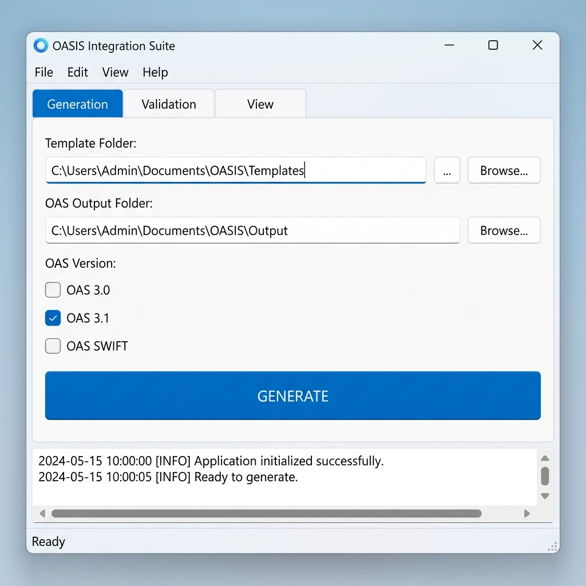
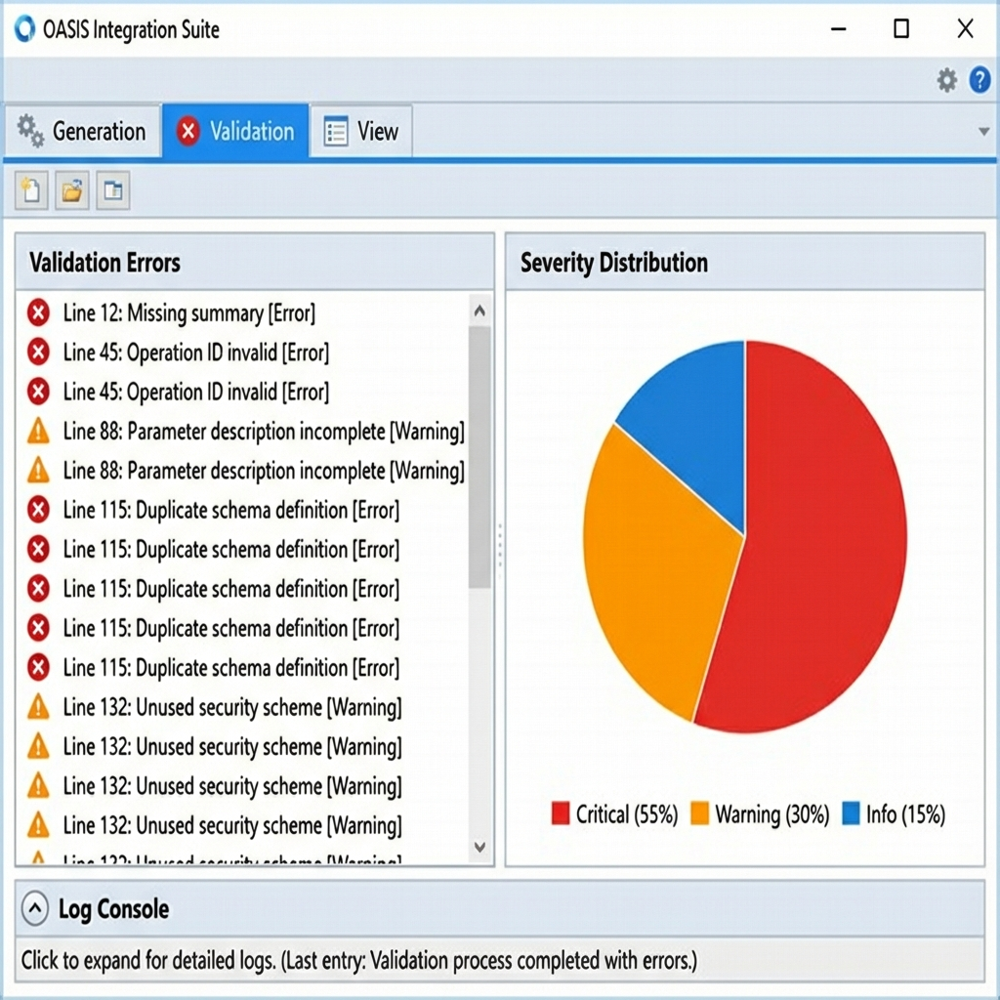
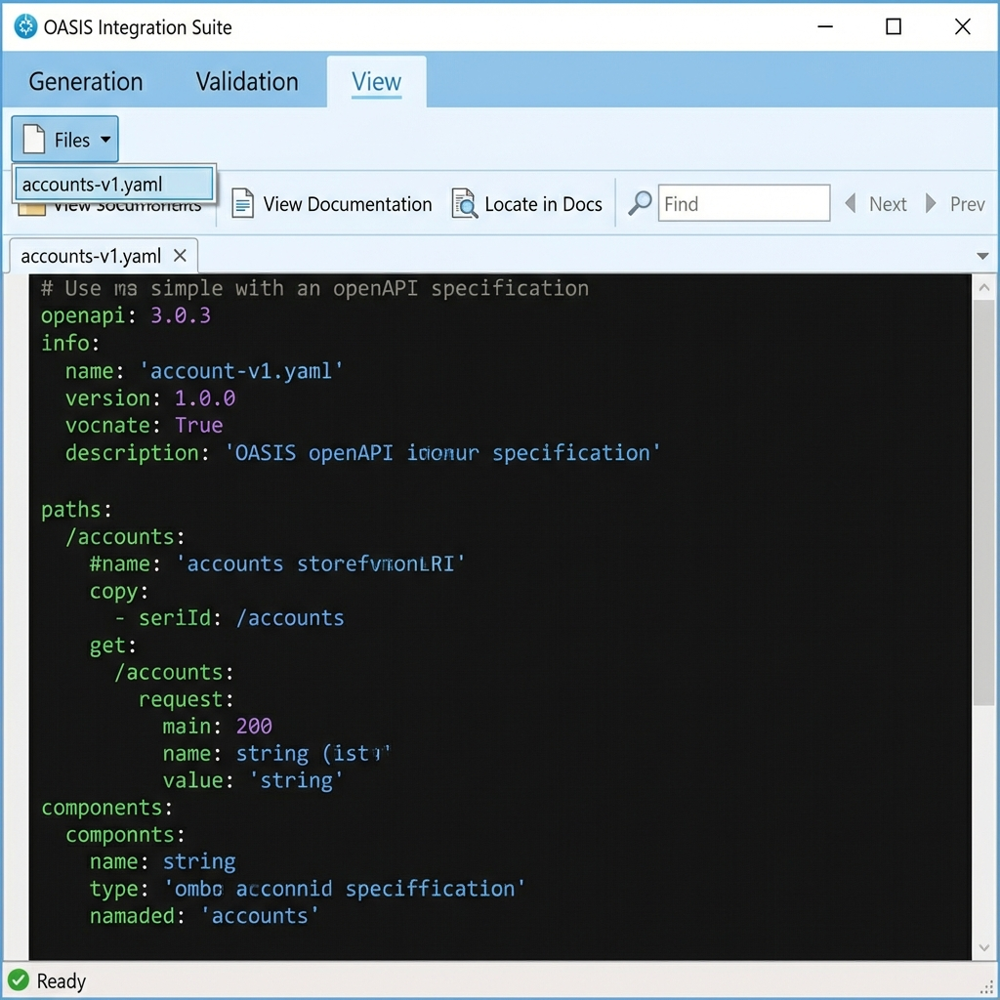

OASIS Integration Suite
v1.4 User Guide
Introduction
The OAS Integration Suite (OASIS) is a comprehensive toolset designed for the design, generation, validation, and documentation of OpenAPI Specifications (OAS 3.0, 3.1) from Excel templates. It streamlines the API design workflow, ensuring standards compliance and efficiency.
The Interface
OASIS features a clean, tabbed interface organized into three main areas: Generation, Validation, and View.

Menu Bar
- File: Select input/output folders or Exit. Features smart navigation that switches to the correct tab.
- Edit: Access application Preferences (Themes, Defaults).
- View: Quickly switch between the three main functional tabs.
- Help: View this User Guide or the About dialog.
Key Features
1. Generation Tab
This is the starting point for your workflow.
- Template Folder: Select the directory containing your API definition Excel files.
- Output Folder: Choose where the generated YAML/JSON files will be saved.
- Options: Toggle generation for OAS 3.0, 3.1, or SWIFT specific formats.
- Generate Button: Starts the processing engine. Logs are displayed in the console below.
2. Validation Tab
Analyze your API specifications for errors and compliance.

- Uses Spectral rulesets to validate content.
- Displays a visual chart of issues (Severity distribution).
- Lists errors with line numbers for easy remediation.
3. View Tab (YAML Viewer)
A comprehensive, syntax-highlighted editor designed for inspecting generated OAS files.

- View Documentation: Launches a rendered HTML preview of your API (Redoc), allowing you to see the final output as consumers will see it.
- Locate in Docs: A powerful navigation feature. Place your cursor on any line in the YAML editor and click 'Locate in Docs' to instantly scroll the HTML documentation to that specific section.
- Find in YAML: Use the search bar (or
Ctrl+F) to quickly locate schema definitions, paths, or keywords within the code.
- Syntax Highlighting: Color-coded YAML syntax for better readability.
Preferences & Configuration
Access the settings via Edit > Preferences to tailor OASIS to your specific workflow.
- Appearance:
- Theme: Switch between 'System', 'Light', or 'Dark' application modes.
- Editor Font: Set your preferred font size and family for the YAML Viewer.
- Defaults:
- Set a default Template Folder to save time on every startup.
- Generation Settings:
- Pre-select desired output versions (OAS 3.0, 3.1, SWIFT) so you don't have to check them manually each time.
- Configure logging verbosity (Dark/Light log themes).
- Validation:
- Configure rule behaviors (e.g., 'Ignore Bad Request' allows suppressing 400 errors from strict validation).